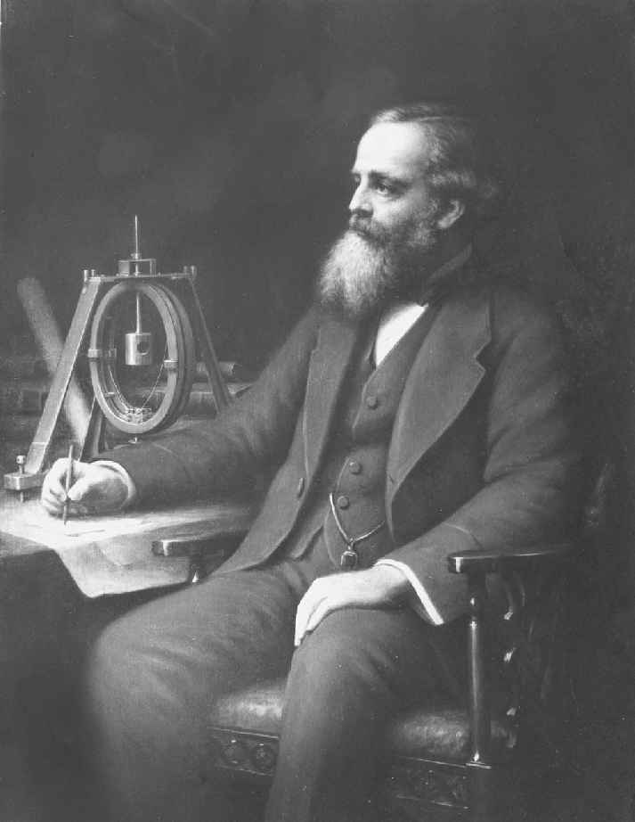
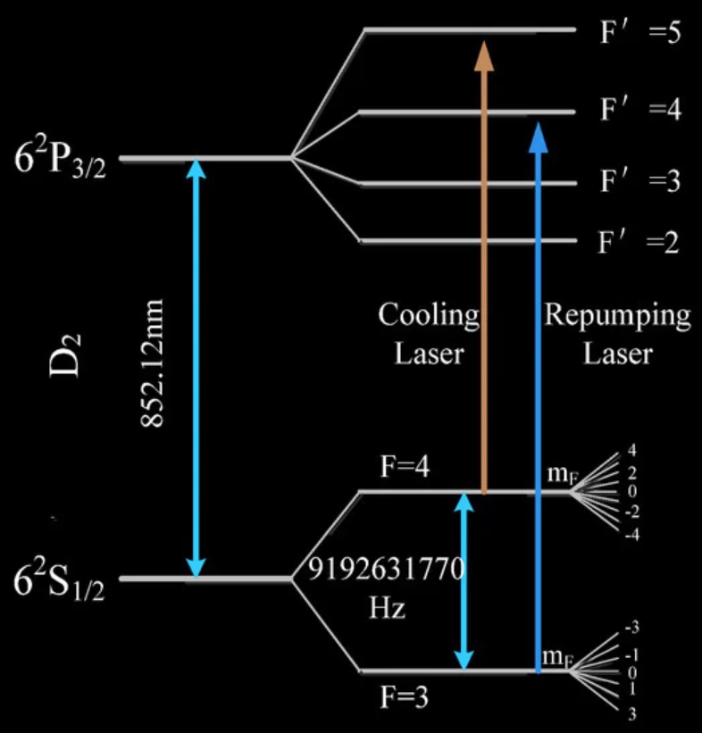
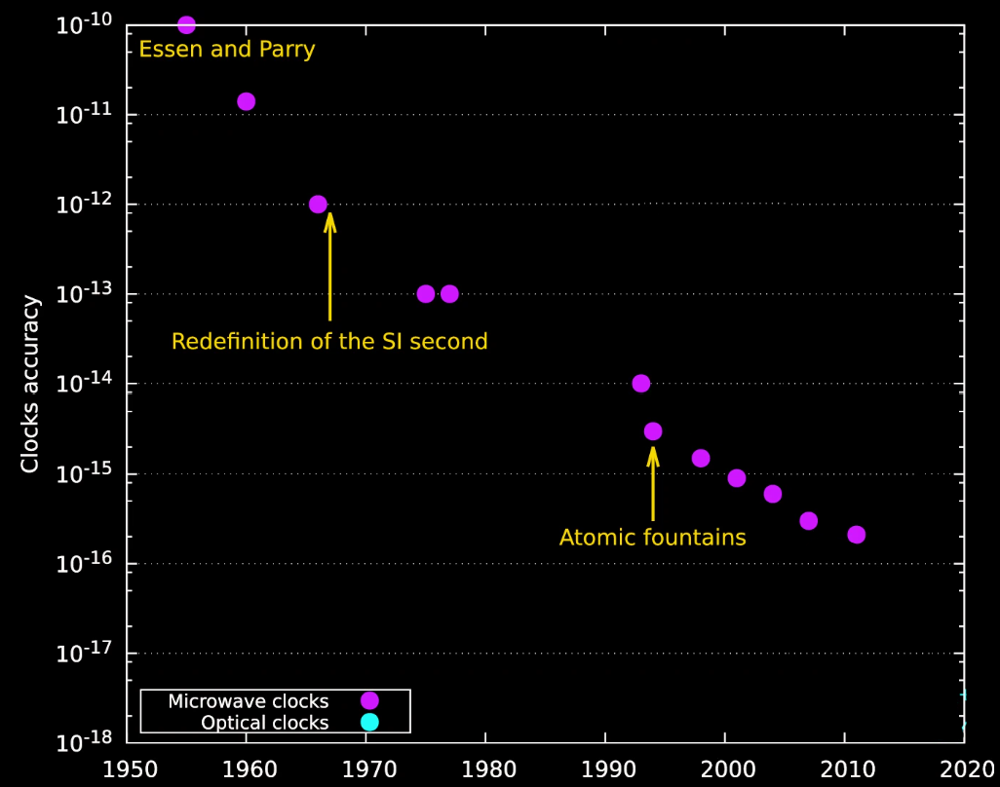
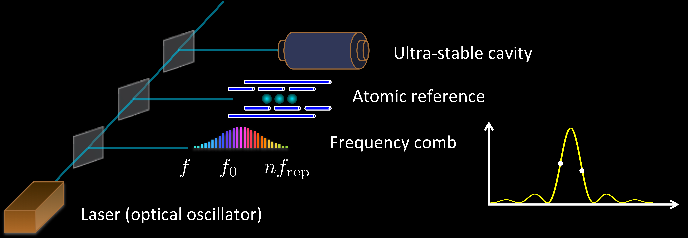
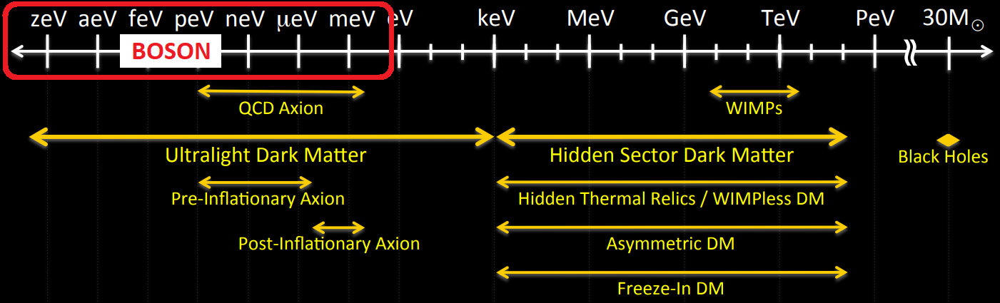

# A brief history of time(keeping) ## _atomic clocks at the precision frontier of fundamental physics_ <br> <br> ### CSIRO Space & Astronomy Colloquium #### Sydney #### 26 June 2024 <div class="r-stretch"></div> ### Benjamin M. Roberts <br> School of Mathematics and Physics, University of Queensland, Australia <br><br> * Slides [broberts.io/talks](https://broberts.io/talks) <br> <br> <!-- <img src="img/ARC.png" width="30%"> --> <!-- Supported by Autralian Research Council --> Supported by: ARC and <img src="img/BQI.png" width="20%"> <!-- <img src="https://www.bqx.com.au/wp-content/uploads/2022/10/BXI_Logo-768x233.png" width="30%"> --> <br><br>
# Precision timing: fundamental physics <div style="text-align: left; float: left; width: 70%"> <br> <div class="fragment" data-fragment-index="0"> <h3> 1657: Huygens designs pendulum clock</h3> <h4> • Accurate to $\sim15$ s / day</h4> <h4> • Works on solid physics principal: $T\propto\sqrt{L/g}$</h4> </div> <br> <div class="fragment"> <h3> 1672: Jean Richer expedition to French Guiana </h3> <h4> • Observe Mars near equator -- measure scale of solar system</h4> <h4> • Failed: pendulum clocks ran slow by 2 min / day</h4> </div> <br> <div class="fragment"> <h3> 1687: Newton's Principia (15 years post Richer)</h3> <h4> • Explained Richer's measurement: law of gravitation</h4> </div> <br> <div class="fragment"> <h3> 1676: Rømer calculates speed of light</h3> <h4> • Observe eclipse of Jupiter's moons</h4> <h4> • Required accuracy of $\sim30$ s / day</h4> </div> <br> <div class="fragment"> <h3> Modern day</h3> <h4> • Allows GPS</h4> <h4> • Underpins modern geodesy</h4> </div> </div> <div class="fragment " data-fragment-index="0" style="text-align: center; float: right; width: 30%"> <br> <br> <font size="3">[Huygens 1673]</font> </div>
# Clock: a thing that ticks ### Predictable, period motation + method to count ticks <br> <div> <div class="fragment fade-in" style="text-align: center; float: left; width: 32%"> <img src="img/StoneHenge.png" width="86%"><br> <font size="3">[Getty]</font> <br> <h3> Earth's orbit/rotation </h3> </div> <div class="fragment fade-in" style="text-align: center; float: left; width: 32%"> <img src="img/H1.png" width="96%"><br> <font size="3">[H1, Royal Museums Grenwhich]</font> <br> <h3> Swinging pendulum </h3> </div> <div class="fragment fade-in" style="text-align: center; float: right; width: 32%"> <img src="img/laser-JILA.jpg" width="100%"> <font size="3"> [JILA]</font> <br> <h3> Oscillating electromagnetic wave </h3> </div> </div> <br> <br> <div class="fragment fade-in" style="text-align: left; float: left; width: 100%"> <br> <br> <br> <h3> • Pendulums (+all kinematic clocks): depend on materials, location, temperature etc. <br> • Earth rotation: unstable at ~5 ms per day $10^{-7}$ <br> • Atomic clock: universal timekeeping based on fundamental physics </h3> </div>
## Lord Kelvin in 1879 (attributed to Maxwell): <br><br> <div style="text-align: left; float: left; width: 70%"> <div style="text-align: center; float: center; width: 100%"> <font size="18"> The recent discoveries ... <!-- due to the kinetic theory of gases and to spectrum analysis<br> --> indicate to us natural standard <br>pieces of matter such as <b>atoms of hydrogen or sodium,<br> ready made in infinite numbers, <br>all absolutely alike in every physical property</b>.<br><br> </font> </div> <div class="fragment fade-in" data-fragment-index="1" style="text-align: center; float: center; width: 100%"> <font size="18"> The time of vibration of a sodium particle corresponding to <br>any one of its modes of vibration is <b>known to be absolutely independent of its position in the Universe</b>... </font> </div> <br><br> <div class="fragment fade-in" data-fragment-index="1" style="text-align: center; float: center; width: 90%"> <font size="4"> Thomson, W., and P. G. Tait, 1879, Elements of Natural Philosophy (Cambridge University Press, Cambridge, England)</font> </div> </div> <div style="text-align: left; float: right; width: 30%"> <br> <font size="3"> [R. H. Campbell | Institution of Electrical Engineers]</font> </div>
# Atomic Clocks 101: <br> ### Frequency reference: atomic transition <br> <br> <div class="fragment fade-in" style="text-align: center; float: left; width: 32%"> <img src="img/Bohr.png" width="70%"><br> <font size="3"> JabberWok [Wikimedia Commons]</font> <br><br><br> <h3> Atomic transition: "perfect*" frequency reference </h3> </div> <div class="fragment fade-in" style="text-align: center; float: left; width: 32%"> <img src="img/Wcislo2016.png" width="95%"> <font size="3">[Wcislo, Nature Astronomy (2016)]</font> <br><br><br> <h3> Compare frequency of oscillator to atomic transition </h3> </div> <div class="fragment fade-in" style="text-align: center; float: right; width: 32%"> <img src="img/Al+Choi2010.png" width="95%"> <font size="3">[Chou et al., Science 329, 1630 (2010)]</font> <br><br><br> <h3> Lock on: Adjust local oscillator to maximum transition rate </h3> </div>
# Cs fountain clock <div style="text-align: center; float: left; width: 50%"> <img src="img/NIST_F1.jpg" width="38%"> <img src="img/Cs-F1-NIST.png" width="53%"><br> <font size="3">[NIST | Cs F1 clock]</font> </div> <div class="fragment fade-in" style="text-align: center; float: right; width: 50%"> <br> <img src="img/SI.png" width="20%"> * 1967: $^{133}$Cs hyperfine transition defines $s$ * $f_0 \equiv 9\ 192\ 631\ 770$ Hz * Microwave frequency <br> </div>
# Moore's law for atomic clocks <div class="r-stack"> <div class="fragment fade-out" data-fragment-index="0">  </div> <div class="fragment fade-in" data-fragment-index="0"> </div> </div> <!-- --> <font size="4"> [Pacome Delva <i>et al.</i>, Chronometric Geodesy: Methods and Applications (2019)] </font>
# Optical atomic clocks <br><br> <!-- <div class="r-stack"> <div class="fragment fade-out" data-fragment-index="0"> <img src="img/Stability.png" width="100%"><br> <font size="3"> [M. Safronova]</font> </div> <div class="fragment fade-in" data-fragment-index="0">  </div> </div> --> <div class="fragment fade-in" style="text-align: left; float: left; width: 55%"> <img src="img/Stability.png" width="95%"><br> <font size="3"> [M. Safronova]</font> <br> <br> <br> * Requires ultra-stable laser ("see" narrow line) * Frequency comb ("listen" to high frequency) </div> <div class="fragment fade-in" style="text-align: center; float: right; width: 45%"> <font size="3">[Centre for Quantum Technologies | U. Singapore]</font> <br> <br> <br> <img src="img/Diddams-Comb.png" width="95%"> <font size="3">[Diddams <i>et al.</i>, Science <b>369</b>, 3676 (2020)]</font> </div> <!-- --> <div class="fragment fade-in"> <br> * Accurate to parts in $10^{18}$ * better than 1 s over lifetime of the universe! </div>
# Example: gravitational redshift <br> $$ \Huge {\color{orange} \frac{\Delta f}{f} = -\frac{\Delta U}{c^2} \sim 10^{-16} \frac{\Delta r}{{\rm m}} } $$ <br> <div class="fragment fade-in" style="text-align: center; float: left; width: 60%"> <img src="img/Chou-A.png" width="50%"> <img src="img/Chou-B.png" width="45%"><br> <font size="4">30 cm [Chou et al., Science <b>329</b>, 1630 (2010)]</font><br><br> * $\sim$ 30 cm </div> <div class="fragment fade-in" style="text-align: center; float: right; width: 40%"> <img src="img/Ye-Redshift.png" width="85%"> <br> <font size="4">[Bothwell <i>et al.</i>, Nature <b>602</b>, 420 (2022)] </font><br><br> * $\sim$ 1 mm </div> <div class="fragment fade-in"> <br> * Gravitational red-shift is one of the biggest systematic which must accounted for in clock comparisons -- even within the same lab! </div>
<br><br><br><br><br><br><br><br><br> # Fundamental Physics
# The Standard Model + General Relativity <br> <div style="text-align: center; float: left; width: 50%"> <img src="https://upload.wikimedia.org/wikipedia/commons/2/2b/Standard_Model_of_Elementary_Particles_dark.svg" width="95%"> <font size="3"> Credit: Cush [Wikimedia Commons]</font> </div> <div style="text-align: left; float: right; width: 47%"> <h2>Tested with extraordinary precision</h2> <br> <h3> • e.g., electron magnetic moment, Higgs boson</h3> <h3> • gravitational lensing, gravitational waves</h3> <br><br><br> <h2>However...</h2> <br><br><br> <div class="fragment"> <h2>Several deep inconsistencies</h2> <h2>with the observed universe</h2> </div> <!-- <p data-markdown>• Tested across vast scales with extreme precision</p> <br> <p data-markdown>• This is my first right element</p> --> </div>
# Unexplained mysteries <br> <div style="text-align: center; float: left; width: 70%"> <div class="fragment" data-fragment-index="0" style="text-align: left;" data-markdown> <h2>Why is there so much more matter than anti-matter?</h2> <h3> • CP-violation in the Standard Model is too small</h3> </div> <!-- <br> <div class="fragment" data-fragment-index="1" style="text-align: left;" data-markdown> <h2>Is there a quantum theory of gravitation?</h2> <h3> • Quantum mechanics and general relativity incompatible </h3> </div> --> <br> <div class="fragment" data-fragment-index="1" style="text-align: left;" data-markdown> <h2>What is Dark Energy?</h2> <h3> • Cosmologists: Why is Λ so large? • Particle theorists: Why is Λ so small? </h3> </div> <br> <div class="fragment" data-fragment-index="2" style="text-align: left;" data-markdown> <h2>What is Dark Matter?</h2> <h3> • Missing mass from the universe • Matter that interacts <em>only</em> gravitationally? </h3> </div> <br> <div class="fragment" data-fragment-index="3" style="text-align: left;" data-markdown> <h3> 95% of universe is "dark"; we can only use the 5% to learn about the rest! </h3> </div> </div> <div style="text-align: left; float: right; width: 25%"> <br> <img class="fragment" data-fragment-index="0" src="img/antimatter.png" width="95%"> <br><br><br><br> <img class="fragment" data-fragment-index="2" src="img/dm-pie.jpg" width="95%"> </div> <!-- <div style="text-align: center; float: left; width: 70%"> <div class="fragment" data-fragment-index="0" style="text-align: left;" data-markdown> <h2>Why is there so much more matter than anti-matter?</h2> <h3> • CP-violation in the Standard Model is too small</h3> </div> <br> <div class="fragment" data-fragment-index="1" style="text-align: left;" data-markdown> <h2>Quantum theory for gravitation?</h2> </div> <br> <div class="fragment" data-fragment-index="2" style="text-align: left;" data-markdown> <h2>No explanation for dark energy</h2> <h3> • Explain accelerated expansion of universe • Cosmologists: Why is Λ so large? • Particle theorists: Why is Λ so small? </h3> </div> <br> <div class="fragment" data-fragment-index="3" style="text-align: left;" data-markdown> <h2>No explanation for dark matter...</h2> </div> </div> <div style="text-align: left; float: right; width: 30%"> <br><br><br><br><br><br> <img class="fragment" data-fragment-index="2" src="img/dm-pie.jpg" width="95%"> </div> -->
# Dark Matter: Galactic Rotation Curves <div style="text-align: center; float: left; width: 70%"> <br><br> <img src="https://upload.wikimedia.org/wikipedia/commons/c/cd/Rotation_curve_of_spiral_galaxy_Messier_33_%28Triangulum%29.png" width="95%"><br> <font size="3">[Mario De Leo, Wikimedia Commons]</font> </div> <div style="text-align: left; float: right; width: 30%"> <br><br> <h2>Missing Matter?</h2> <br> <p data-markdown>• Not a small correction</p> <br> <p data-markdown>• 80 - 95% of mass is "missing"</p> <br> <div data-markdown class="fragment fade-in"> <p data-markdown>• Implies <font color="orange">dark matter</font> </p><br> \[a = \frac{G \, [M(r) + {\color{orange}\delta M(r)}]}{r^2} \] <br> <p data-markdown> • Simulations + observations: DM "halo"</p> </div> <br> <p data-markdown class="fragment fade-in">• ... or <font color="green">modified gravity</font><br><br> \[a = \frac{[G + {\color{green}\delta G(M,r)}] \, M(r)}{r^2} \] </p> <br> </div>
# Evidence builds up <br> <div style="text-align: left; float: left; width: 50%"> <div> <h2> Rotation curves</h2> <h3> • Missing galactic matter</h3> </div> <br> <div class="fragment"> <br> <h2> Gravitational lensing</h2> <h3> • Gravitational bending of light</h3> </div> <br> <div class="fragment"> <br> <h2> Cosmic Microwave Background</h2> <h3> • Gravitational imprint on background radiation</h3> </div> <!-- <div class="fragment"> <br> <h2> Baryon Acoustic Oscillations</h2> <h3> • Sound waves (density fluctuations) in matter</h3> </div> --> <br> <div class="fragment"> <br> <h2> Large-Scale Structure Simulations</h2> <h3> • Dark Matter required to match observations</h3> </div> </div> <br> <div style="text-align: center; float: right; width: 50%"> <br><br> <b>Large-Scale Structure simulation:</b><br><br> <img src="img/Cosmic_web.jpg" width="90%"><br> <font size="3">[Volker Springel/MPI, Wikimedia Commons]</font> </div>
# Dark Matter: What we don't know <br> <div class="fragment" data-fragment-index="0"> <h2> ... everything else</h2> </div> <br> <!-- <img src="img/DM_masses2.png" width="80%"> --> <div class="r-stack"> <img class="fragment" data-fragment-index="1" src="img/DM_masses2.png" width="80%">  </div> <div class="fragment" data-fragment-index="1"> <font size="3">US "Cosmic Visions" report [arXiv:1707.04591]</font> </div> <br> <br> <div class="fragment" data-fragment-index="1"> <h3>• Possible mass range: 90 orders of magnitude!</h3> </div> <div class="fragment" data-fragment-index="2"> <h3>• Fundamental particle: 50 orders (de Broglie to Planck)</h3> </div> <br> <div class="fragment"> <h3> • Vast majority of focus on WIMPs, but field is very wide</h3> </div>
# WIMP Searches: XENON <div style="text-align: left; float: left; width: 60%"> <div class="r-stack"> <div class="fragment fade-out" data-fragment-index="1"> <br><br><br> <img src="img/Feynman.png" width="65%"> <br><br> <h3 class="fragment highlight-red" data-fragment-index="0">• Direct detection (scattering)</h3> <h3>• Indirect detection (annihilation)</h3> <h3>• Collider searches (production)</h3> </div> <div> <div class="fragment fade-in" data-fragment-index="1"> <br> <h3>Excluded cross-section for WIMPs:</h3> <img src="img/WIMP-constraints.png" width="90%"><br> <font size="3">[GAMBIT]</font> </div> <h3 class="fragment fade-in" data-fragment-index="2"> • Mass below nuclear mass: energy threshold </h3> <h3 class="fragment fade-in" data-fragment-index="2"> • High mass: fewer particles </h3> </div> </div> </div> <div style="text-align: center; float: right; width: 40%"> <img src="img/xenon.png" width="65%"> </div>
# En*light*ening the search for Dark Matter? ## Atomic Physics! <br> <div style="text-align: center; float: left; width: 60%"> <div class="fragment" data-fragment-index="0" style="text-align: left;" data-markdown> <h2> Mass drops below nuclear mass:</h2> <h3> • No nuclear recoils. Instead: electron recoils + ionisation <font size="6">• e.g., Ashlee Caddell, Flambaum, BMR, <a href="https://journals.aps.org/prd/abstract/10.1103/PhysRevD.108.083030">Phys. Rev. D <b>108</b>, 083030 (2023)</a></font></h3> </div> <div class="fragment" data-fragment-index="1" style="text-align: left;" data-markdown> <h2> Mass drops below electron mass:</h2> <h3> • No electron recoils • Instead: absorption (dark photoelectric effect)</h3> </div> <br> <div class="fragment" data-fragment-index="2" style="text-align: left;" data-markdown> <h2> Mass drops below eV:</h2> <h3> • Classical DM field • Quantum sensing (atomic clocks)</h3> </div> <br> </div> <div style="text-align: center; float: right; width: 40%"> <br> <img class="fragment" data-fragment-index="0" src="img/atom.png" width="40%"> <br><br> <div class="r-stack"> <div class="fragment" data-fragment-index="2"> <img src="img/laser-JILA.jpg" width="90%"><br> <font size="3">[JILA]</font> </div> <!-- <div class="fragment" data-fragment-index="3"> <img src="img/Ye_UCBolder-SrLattice.jpg" width="80%"><br> <font size="3">[Ye/UCBolder]</font> </div> --> </div> </div>
# Light and Ultralight Dark Matter <br><br> <div> \[ \Huge \rho_{\rm DM}\simeq 0.3 ~ \frac{\rm GeV}{\text{cm}^3} \] </div> <br> ## Mass decreases $\implies$ number density increases: ## Classical boson field (e.g., axions, scalars) <br> <div style="text-align: left; float: right; width: 70%"> <div class="fragment fade-in"> <h3> 1. No interaction: oscillation: $\phi = \phi_0 \cos(m_\phi t)$ </h3> \[\phi_0^2\propto \rho_{\rm DM}\] </div> <h3 class="fragment fade-in"> 2. Interactions: clumps </h3> <br> <h3 class="fragment fade-in"> 3. Also: constant build-up (local over-densities) </h3> <br><br> </div> <br><br><br><br> <!-- * Review: Hui _et al._, [PhysRevD.95.043541 (2017)](http://arxiv.org/abs/1610.08297) * Review: Antypas _et al._, Snowmass 2021 [arXiv:2203.14915](https://arxiv.org/abs/2203.14915) --> * Review: Hui _et al._, Phys. Rev. D **95**, 043541 (2017) * Review: Antypas _et al._, Snowmass 2021 [arXiv:2203.14915]
# "Listen" for DM field using atomic clocks <br> <div style="text-align: left; float: left; width: 50%"> <br> <br> <img src="img/NHanacek_NIST.png" width="90%"><br> <font size="3">[N Hanacek | NIST]</font> </div> <div style="text-align: left; float: right; width: 50%"> <br> <div> <h3> • DM scalar field has small interaction with matter </h3> <h3> • Shift atomic energy levels and frequencies </h3> </div> <br> <div class="fragment fade-in"> <h3>Observable shift:</h3> <br> \[\huge \frac{\delta f}{f} = \kappa \, \phi_\text{DM}(\vec{r},t) \] </div> <br> <div class="fragment fade-in"> <h4> • $\kappa$ - model dependent parameter </h4> <h4> • Calculated: high-precision atomic theory </h4> </div> <br> <div class="fragment fade-in"> <h3>Example: variation of fundamental constants</h3> <br> $$ \large \mathcal{L} = \phi F_{\mu\nu}F^{\mu\nu} \implies \alpha\to\alpha[1+\phi_\text{DM}(\vec{r},t)] $$ <br> $$ \large \kappa = \frac{\partial (f/f_0)}{\partial (\alpha/\alpha_0)} $$ </div> </div>
# Variation of fundamental constants ### Example: fine structure constant: $\alpha$ <div> \[\large \omega^{A} = \underbrace{F_A(\alpha)}_{\text{Transition-specific}} \times \underbrace{m_e c^2\alpha^2}_{\text{Units}} \qquad\qquad \alpha = \frac{e^2}{4\pi\epsilon_0\,\hbar c} \] </div> <div class="fragment" style="text-align: center; float: left; width: 50%"> <br><br> <img src="img/Bohr.png" width="30%"><br> <font size="3">[JabberWok/Wikipedia]</font> <br><br><br> \[ \frac{\Delta\omega}{\omega} = K\frac{\Delta\alpha}{\alpha} \qquad\qquad\qquad \left( {\color{red}K \equiv \frac{\partial \omega}{\partial \alpha}\frac{\alpha_0}{\omega}} \right) \] <br> * In general, $K$ calculated from atomic theory * Difference transitions: different sensitivity <br> * Dzuba, Flambaum, Webb, [Phys Rev Lett **82**, 888 (1999)](https://journals.aps.org/prl/abstract/10.1103/PhysRevLett.82.888) </div> <div class="fragment" style="text-align: left; float: right; width: 50%"> <br> <br> <img src="img/AlphaSensitivity.png" width="90%"><br> <font size="3">[M. Murphy 2012]</font> </div>
# Spatial variation <div class="fragment" style="text-align: center; float: left; width: 50%"> <br> * Observe spectra from distant stars * Compare to measurements on Earth <br> <br> <br> </div> <div class="fragment" style="text-align: center; float: right; width: 50%"> <br> ### Possible non-zero result <br> <font size="3">[M. Murphy 2012]</font> <br> <br> * 3 $\sigma$ result: hard to quantify systematics * Webb _et al._, PRL **87**, 091301 (2001); **107**, 191101 (2011) <div class="fragment"> * Over year, earth moves through gradiant $$ \delta\alpha/\alpha_0 \sim 10^{-20} / \text{year} $$ * Very near-future clocks can probe this </div> </div>
# Oscillating signals <div style="text-align: left; float: left; width: 50%"> <br> <h3>Case: oscillating field:</h3> \[\huge \phi_{DM} = \phi_0 \cos({m_\phi t}) \] <br> \[\huge \frac{\delta f}{f} = \kappa \phi_0 \cos({m_\phi t}) \] <br> <br> <div class="fragment fade-in"> <h3>• Constraints from clock-clock comparisons</h3> <br> <h3>• ~ $10^{-2}$ Hz (optical clocks)</h3> <h4> • e.g., Wcislo <i>et al.</i> <a href="https://advances.sciencemag.org/content/4/12/eaau4869"> Science Advances <b>4</b>, 4869 (2018)</a> </h4> <br> <h3>• ~ $10^{-6}-10^{-2}$ Hz (microwave clocks)</h3> <h3>• $\implies m = 10^{-21}-10^{-18}$ eV</h3> <h4> • e.g., Hees <i>et al.</i> <a href="http://link.aps.org/doi/10.1103/PhysRevLett.117.061301"> Phys. Rev. Lett. <b>117</b>, 061301 (2016)</a> </h4> </div> </div> <div style="text-align: left; float: right; width: 50%"> <br> <br> <div class="fragment fade-in"> <h3>The DAMNED experiment:</h3> <img src="img/damned.png" width="90%"><br> <p>(DArk Matter search using Non-Equal Delay lines)</p><br> <div class="fragment fade-in"> <h3>• Modifies length + refractive index</h3> <h3>• 10-100 kHz range ($m=10^{-10}$ eV)</h3> <h3>• Led by Etienne Savalle (SYRTE Paris)</h3> Savalle, Hees, Frank, Cantin, Pottie, <b>BMR</b>, Cros, McAllister, Wolf, <br> <a href="https://link.aps.org/doi/10.1103/PhysRevLett.126.051301"> Phys. Rev. Lett. <b>126</b>, 051301 (2021)</a> </div> </div> </div>
# Transient Signals <br><br><br> <div style="text-align: left; float: left; width: 50%"> <img src="img/td.png" width="80%"> Derevianko + Pospelov, [Nature Physics (2014)](http://www.nature.com/doifinder/10.1038/nphys3137) </div> <div style="text-align: left; float: right; width: 50%"> <h3>• Scalar DM with small self-interaction:</h3> <br> <h3>• May form "clumps": topological defects, Q-balls</h3> <br> <h3> • Topological defects: size $d\sim 1/m_\phi$</h3> <br> <h3> • $m=10^{-10}$ eV $\implies$ $d\simeq 1$ km</h3> <br> <h3>• Wait until one passes through Earth</h3> <br> <h3>• How to distinguish from noise?</h3> <br> <h3> • Correlated signal across global network</h3> </div>
# GPS.DM <div style="text-align: left; float: left; width: 35%"> <br> <!-- --> <!-- <br><br><br> --> <h3>• 30 Cs, Rb atomic clocks</h3> <br> <h3>• Over 20 years of high-quality data</h3> <br> <h3>• Publicly available (JPL)</h3> <br> <h3>• 50,000 km Dark Matter observatory</h3> <br> <!-- <img div class="fragment fade-in" src="img/gps-data.png" width="95%"> --> <div class="fragment fade-in"> <video width="75%" data-autoplay muted> <source src="img/GPSDM.mp4"> </video><br> <font size="3">[Video: Conner Dailey (honors student)]</font> </div> </div> <div style="text-align: center; float: right; width: 65%"> <!-- <div class="fragment fade-in"> <video width="40%" data-autoplay muted> <source src="img/GPSDM.mp4"></video><br> <font size="3">[Video: Conner Dailey (honors student)]</font> </div> --> <img div class="fragment fade-in" src="img/gps-data.png" width="45%"> <br> <br> <br> <div class="fragment fade-in"> <img src="img/GPSDM-results.png" width="98%"> <b>BMR</b>, Blewitt, Dailey, Murphy, Pospelov, Rollings, Sherman, Williams, Derevianko, <br> <a href="http://www.nature.com/articles/s41467-017-01440-4"> Nature Comms. <b>8</b>, 1195 (2017)</a> </div> </div>
# European Fibre-linked network <br> <div style="text-align: center; float: left; width: 50%"> <br> </div> <div style="text-align: left; float: right; width: 50%"> <h3>• Laboratory optical clocks</h3> <br> <h3>• Orders-of-magnitude higher precision</h3> <br> <h3>• Orders-of-magnitude less data</h3> <h3> • (hours, not years)</h3> </div> <div class="fragment fade-in"> <br> <img src="img/SYRTE-results.png" width="80%"><br> <b>BMR</b>, <i>et al.</i>, <a href="https://iopscience.iop.org/article/10.1088/1367-2630/abaace"> N. J. Phys. <b>22</b>, 093010 (2020)</a> </div>
# Constant background: ### _extreme gravitational environment_ <img src="img/Galactic_centre_pillars.jpg" width="95%"><br> <font size="3">[ESA / C. Carreau]</font>
# Super-massive black hole at the Galactic Centre <br><br><br> <div style="text-align: left; float: left; width: 50%"> <h3>• with UCLA Galactic Centre Group</h3> <h4> • Observations led by Tuan Do</h4> <h4> • Andrea Ghez: Awarded 2020 Nobel prize for discovery of black hole</h4> <br> <h3>• Keck telescope in Hawaii</h3> <br> <h3>• Motion of ∼1000 stars tracked</h3> <h4> • Precise spectroscopy for many stars</h4> <br> <br> <div class="fragment fade-in"> <h3>• High gravitational potential</h3> <h3>• Possibly large concentration of dark matter </h3> <h3>• (also other "exotic" physics)</h3> </div> </div> <div style="text-align: center; float: right; width: 50%"> <img src="img/keck-ao.jpg" width="95%"> <font size="3">[Keck Observatory | Ethan Tweedie Photography]</font> <br> <br> <img class="fragment fade-in" src="img/equation.png" width="95%"> <br> </div>
# GR <img src="img/spectra.png" width="60%"> <img class="fragment fade-in" src="img/equation.png" width="60%"> <img class="fragment fade-in" src="img/beta.png" width="60%"> * Hees, Do, **BMR**, Ghez et al., [Phys. Rev. Lett. **124** 081101 (2020)](https://link.aps.org/doi/10.1103/PhysRevLett.124.081101)
# Conclusion
<br><br><br><br><br><br><br><br><br> # Extra
# Bullet Cluster <div style="text-align: left; float: left; width: 65%"> <br> <div class="r-stack"> <div class="fragment fade-out" data-fragment-index="0"> <img src="https://upload.wikimedia.org/wikipedia/commons/e/ea/Bullet_cluster.jpg" width="100%"><br> <font size="3">Chandra X-ray Observatory [NASA]</font> </div> <div class="fragment fade-in" data-fragment-index="0"> <img src="https://upload.wikimedia.org/wikipedia/commons/a/a8/1e0657_scale.jpg" width="90%"> <font size="3">NASA/CXC/M. Weiss - Chandra X-Ray Observatory</font> </div> </div> </div> <div style="text-align: left; float: right; width: 35%"> <br> <h3>• Colliding galaxy clusters ~ 4 Gyr</h3> <br> <h3>• X-ray emission image:<br> distribution of gas (baryons)</h3> <br> <br> <div class="fragment fade-in" data-fragment-index="0"> <h3>• Composite image: X-ray + lensing</h3> <br> <h3>• Pink = gas (X-ray)</h3> <h3>• blue = mass (gravitational lensing)</h3> <br> <h3 class="fragment fade-in" data-fragment-index="1"> • Frictionless dark matter: <br> passes straight through </h3> </div> </div>
# Cosmic Microwave Background (After removal of doppler dipole) <img src="img/CMB.png" width="80%"> <br> <h3 class="fragment fade-in"> • Temperature anisotropies (scale + distribution) <br> very sensitive to distribution of regular and dark matter </h3>
# Cosmic Microwave Background <iframe width="100%" height="70%" data-src="https://chrisnorth.github.io/planckapps/Simulator/"> </iframe> Credit: Chris North (Cardiff U.) - <a href="https://chrisnorth.github.io/planckapps/Simulator/"> chrisnorth.github.io/planckapps/Simulator</a> <br><br>
# Cosmic Microwave Background <img src="img/CMB-PowerSpectrum-Planck.png" width="80%"><br> <font size="3">[ESA/Planck Collaboration (2013)]</font>
# WIMP miracle <!-- <div class="r-stack"> <img class="fragment fade-out" data-fragment-index="0" src="img/DM_masses2.png" width="80%"> </div> <div style="text-align: center; width: 50%"> <img src="img/Feynman.png" width="85%"> </div> --> <div style="text-align: left; float: left; width: 30%"> <br><br> <img src="img/Feynman.png" width="95%"> <br><br> <h3> • Early universe: hot and dense</h3> <h3> DM + SM in thermal equilibrium</h3> <br> <h3 class="fragment fade-in" data-fragment-index="0"> • Universe cools: <br> Boltzmann suppression </h3> <br> <h3 class="fragment fade-in" data-fragment-index="1"> • Universe expands: <br> Shuts off annihilation </h3> <!-- <br> <h3 class="fragment fade-in" data-fragment-index="2"> • Begins in thermal equilibrium </h3> --> </div> <div style="text-align: center; float: right; width: 65%"> <div class="r-stack"> <img class="fragment fade-in" data-fragment-index="0" src="img/YDM/Yeq.png" width="90%"> <img class="fragment fade-in" data-fragment-index="1" src="img/YDM/YDM1.png" width="90%"> </div> <h3 class="fragment fade-in" data-fragment-index="3"> • Weak interaction ($G_F \simeq 10^{-5}\,\text{ GeV}^{-2}$): new physics scale<br> • $m_\text{weak} \simeq 100\,\text{GeV}$ <br> </h3> <h3 class="fragment fade-in" data-fragment-index="4"> • $\langle\sigma v\rangle_{\rm weak} \simeq 3\times10^{-26}\,{\rm cm}^3/{\rm s}$ !!! </h3> </div>